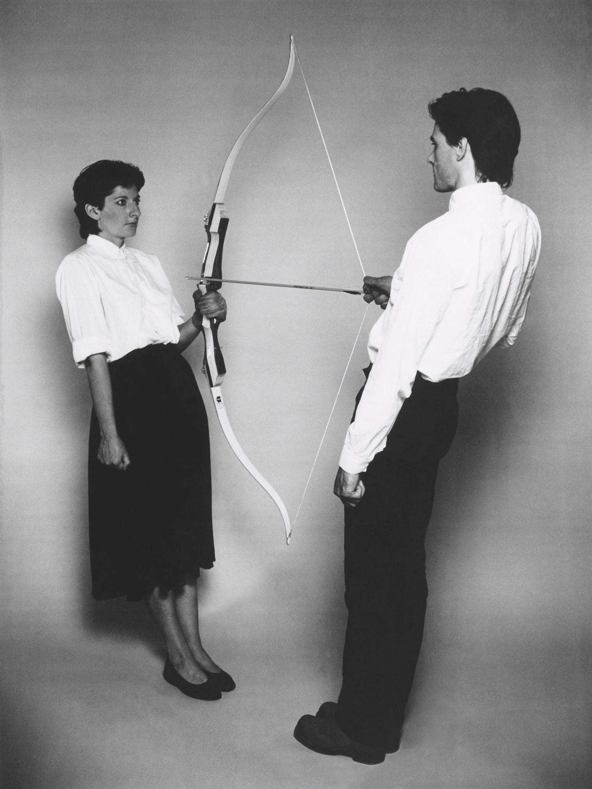

Rest Energy
CommentRest Energy

Marina Abramović 和 Ulay 的行为艺术作品。在 4 分 10 秒的时间里，两人拉着一支有真实杀伤力的合成弓，并对准了 Marina Abramović 的心脏。在他们的心脏附近装着麦克风，现场可以清楚地听到自己的心跳随着时间的流逝逐渐激烈。
两人是现实中的情侣，一起创作了许多行为艺术作品，其中 The Lovers （情人·长城）还与中国颇有渊源。二人 1988 访问中国期间，原计划二人从长城两头分别开始步行，直到在中间会面，作为整个作品。然而 Ulay 爱上了来自中国的翻译，二人在相遇后坦白，只好以各自继续前进走完长城来完成这件作品。
后来在 2010 年，Marina Abramović 的《对视》中，Ulay 再次出现。作品的所有关注者无一不深受感动：22 年后的二人迎来和解。然而（这个是独家八卦）当时二人正处在知识产权的官司当中，那些感动一下又变成完全的滑稽了。
说回 Rest Energy。这件作品最显然的解释，也是 Abramović 自己对此的解释是完全的相信。为了一个作品冒着受伤甚至死亡的风险，将箭矢对准自己，将弓弦交给对方。似乎行为艺术就是有好勇斗狠的传统，像台湾艺术家谢德庆的五件一年行为表演：一年每天24小时每小时打一次卡（会死人的！）；一年不进入任何建筑物（活得下来吗？）。行为艺术不是静态的图像，而是一种“现在进行时”，它作为一个事件在发生。刚看到图的时候，或许会误认为画面里的弓箭只是道具，只是为了用一个形象唤醒人思想中的某个意象（imago）。而当了解到真正在发生的事件后，便立即要人哑口无言。
它成为我最近最钟爱的一件作品，还在于其中暗合了一个经典的结构（也可能是因为我最近在看所以无论什么都能合上）。Lacan 的论文中有这样一个病例，38 岁的埃梅因刺杀法国知名演员达弗洛斯而被捕。其内在逻辑是将他人的形象作为镜像，并加以认同形成了一个实际上是他者的“理想自我”，作为一个追求的对象。真正欲望着一个人的时候，你就会自己去变成那个人，这中间通常包含了非常强烈的反差，以至于主体通过精神分裂的方式直接将幻想实现。对他者的认同，即标志着自我的立即的死亡，“他”对于我是一种杀戮的关系。
在这副作品中，欲望与死亡恰好是两个鲜明的标志。二人面对面针锋相对，彼此的欲望显露无疑，在你死我活的斗争中，千方百计地置对方于死地。因为“我是一个由于一个别人才是自为的存在”，某种意义上这是一场对“承认”的斗争。而现实的结局是一方臣服于另一方。
因为他们最初是等同的，并且是正相反对的，而它们朝着统一的返回又还没有达到，所以它们就会以两个正相反对的意识的形态而存在。其一为一种独立的意识，它的本质是自为存在，另一为依赖的意识，它的本质是为对方而生活或为对方而存在。前者是主人，后者是奴隶。[1]
[1] [德] 黑格尔：《精神现象学》